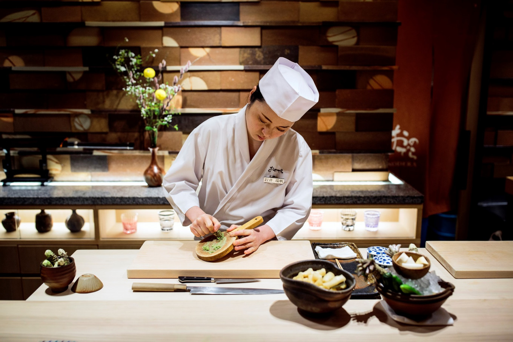
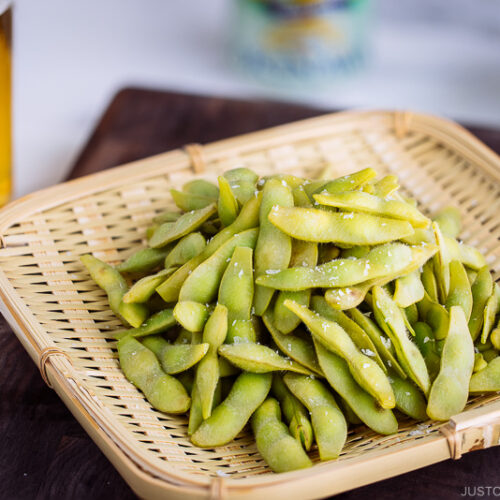
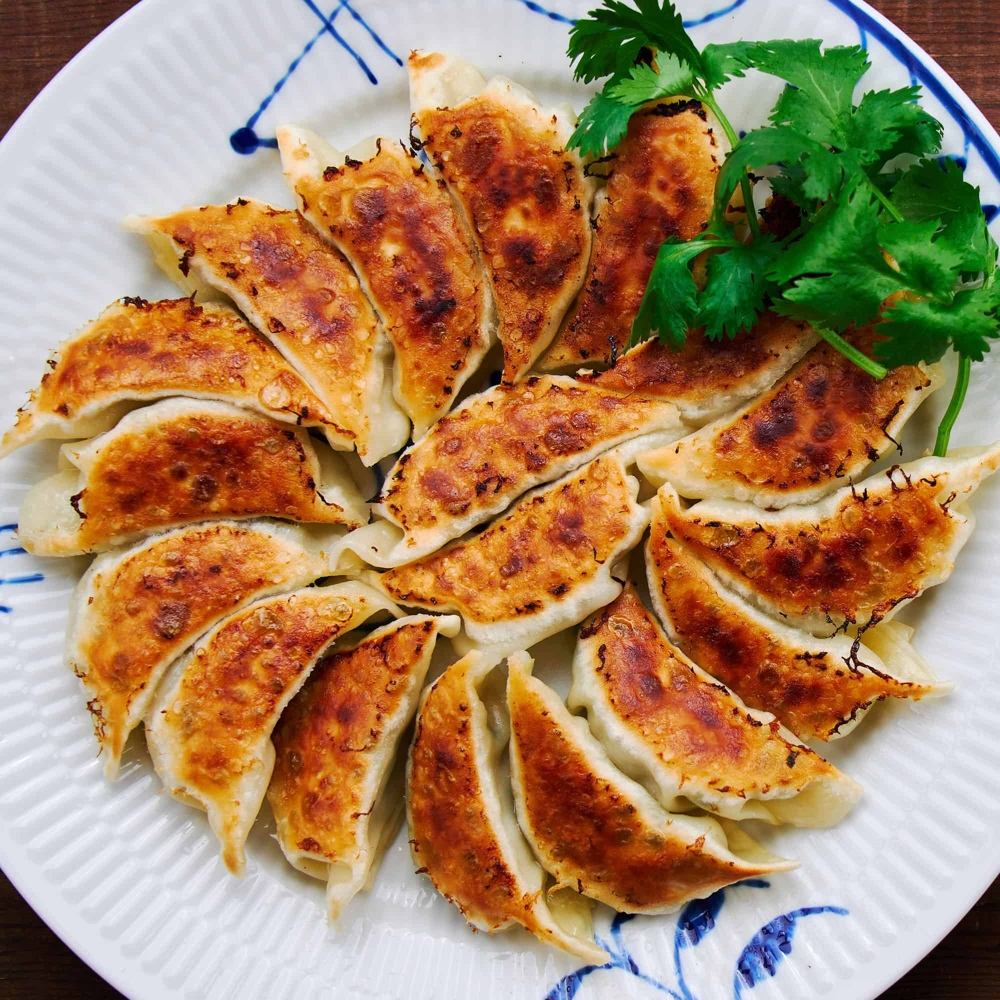

Home
Recipes
Blog
About
Login
Japanese cusine

Appetizers
Edamame

Ingredients
1 bag frozen edamame pods
Water
Salt to taste
Steps
Fill a large pot with water and bring to a rapid boil over high heat.
Once boiling, add a generous pinch of salt to the water.
Add the frozen edamame pods and give a stir to ensure they are immersed in the boiling water.
Allow edamame to cook for 2-3 minutes until the pods are bright green and tender but still firm.
Drain the edamame in a colander and rinse thoroughly under cold running water to stop the cooking process.
Transfer edamame to a serving bowl. Sprinkle with a pinch more salt to taste.
Serve edamame pods whole and eat by popping the beans directly from the pods into your mouth.
Enjoy edamame while hot, as a tasty appetizer or snack.
Gyoza

Ingredients
20-25 gyoza wrappers
8 oz ground pork
1 cup finely chopped cabbage
2 chopped green onions
1 Tbsp grated fresh ginger
2 garlic cloves, minced
2 Tbsp soy sauce
1 Tbsp sesame oil
Salt and pepper to taste
Steps
In a bowl, combine pork, cabbage, green onions, ginger, garlic, 1 Tbsp soy sauce, salt and pepper. Mix well.
Scoop 1-2 tsp of filling into center of each gyoza wrapper.
Use your finger to lightly brush water around the edge of the wrapper.
Fold the wrapper in half, sealing it into a half-moon dumpling shape. Set aside on a lightly floured baking sheet.
Repeat with the remaining filling and wrappers.
Heat 1 Tbsp oil in a non-stick skillet over medium high heat.
Place gyoza in the pan, flat side down in a single layer. Do not overcrowd.
Cook for 2 minutes until lightly browned on the bottom.
Pour 1/4 cup water into the skillet and immediately cover.
Steam the gyoza for 5 minutes until the wrappers are translucent.
Uncover and continue cooking until water is evaporated.
Transfer cooked gyoza to a serving plate.
Drizzle with sesame oil and remaining soy sauce.
Serve gyoza while hot.
Main Dishes
Sushi
Ingredients
2 cups sushi rice
6 nori sheets
1 lb sushi-grade raw fish (tuna, salmon, etc.)
1 avocado, sliced
1 cucumber, julienned
Pickled ginger
Wasabi paste
Soy sauce
Steps
Rinse sushi rice until water runs clear. Cook per package instructions.
Lay a bamboo rolling mat on work surface. Place nori sheet on mat, shiny side down.
Spread about 1/2 cup prepared sushi rice evenly over nori, leaving a 1-inch border on one long edge.
Lay fish or veggie slices down center of rice. Top with avocado, cucumber strips.
Using mat as a guide, tightly roll up nori. Press gently to seal roll.
Transfer roll to cutting board, seam side down. Use a sharp knife to cut roll into 6-8 pieces.
Repeat process with remaining ingredients to make more rolls.
Serve sushi rolls with pickled ginger, wasabi and soy sauce.
Ramen
Ingredients
8 cups chicken or vegetable broth
1 package ramen noodles
4 Tbsp soy sauce
1 lb sliced cooked chicken or pork
4 soft boiled eggs, halved
4 scallions, sliced
Sesame seeds to garnish
Steps
In a large pot, bring the broth to a gentle simmer over medium heat.
Add the noodles and cook per package instructions until tender, about 3 minutes.
Stir in soy sauce until well incorporated.
Divide noodles and broth between 4 large soup bowls.
Top each bowl with cooked meat slices, soft boiled egg halves, and scallions.
Garnish with sesame seeds.
Serve immediately while hot.
.png)